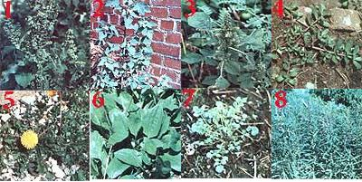

PHOTOS BY THE AUTHOR
[1] Curled dock has slender, wavy-edged leaves that can reach over two feet in length, but such older blades should be boiled in two changes of water to remove any bitterness. [2] The Latin name for lamb's-quarters? Chenopodium album , or ""white goosefoot""?refers to the leaf's shape and light undercoating. [3] Amaranth is sometimes grown for its seeds rather than its greens. [4] Even Henry David Thoreau liked purslane! [5] Be sure to pick dandelion greens before the flower appears. [6] Plantain leaves are so common in disturbed soil that American Indians nicknamed the plant ""white man's footsteps "". [7] Winter cress was sometimes called ""scurvy grass"" by prospectors and homesteaders who ate the vitamin-rich food. [8] The willowlike leaves of fireweed (which thrives in burned-over areas) make a tasty green, but its young stems are a fine ""wild asparagus""!